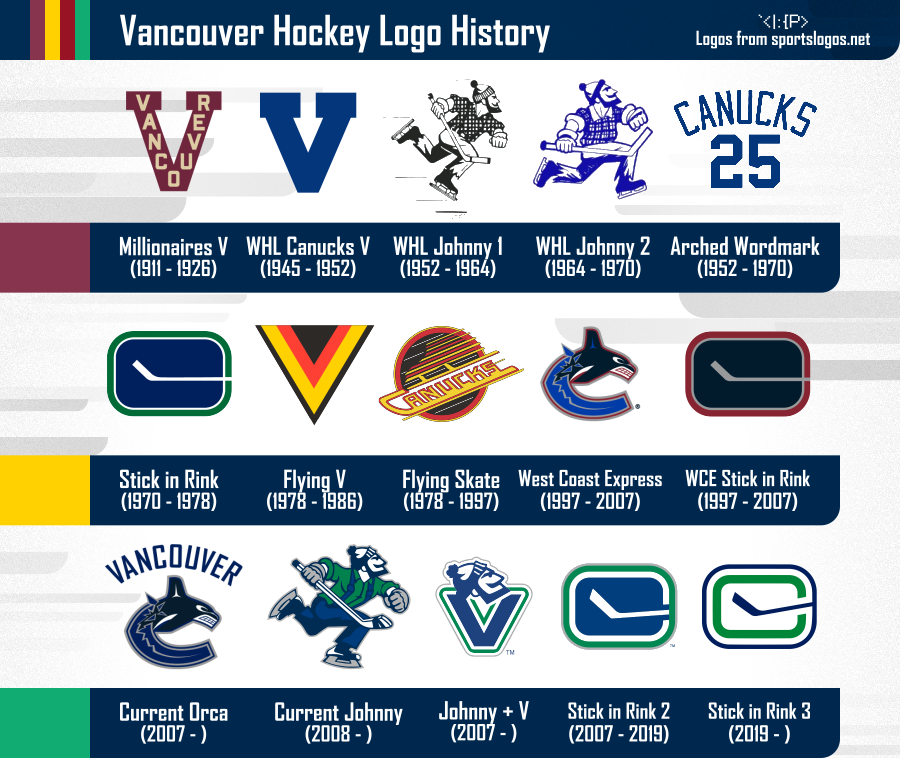

About
Vancouver Hockey is a fansite made by an Information Technologies student from the University of Zadar as a part of "Intro to Web" course. Made with pure love for the hockey culture of province of British Columbia, Canada, this website is a series of pages about professional hockey teams based in Vancouver - descriptions, history and rosters.
History
My introduction and eventual love for hockey couldn't have been predicted by anyone. I wasn't raised in the sport nor is it popular in Ukraine. I discovered hockey for myself after a long period of depression following the full-scale invasion of my country. It became one of the few things that finally got me excited about things again, and from the moment I watched my first game, I was in love.
In the beginning, the team I felt a close connection with were the Arizona Coyotes, a relocated team now known as Utah Mammoth. When the news came about their relocation, I had no choice but to look for a new home. Since the Coyotes were in the Pacific Division, I decided not to stray too far. That's when I discovered the Canucks - and that's what brings me here. I can't help but love Vancouver and its culture; with all its struggles and hardships, the fans and the people in the organization are very dedicated and loyal.
